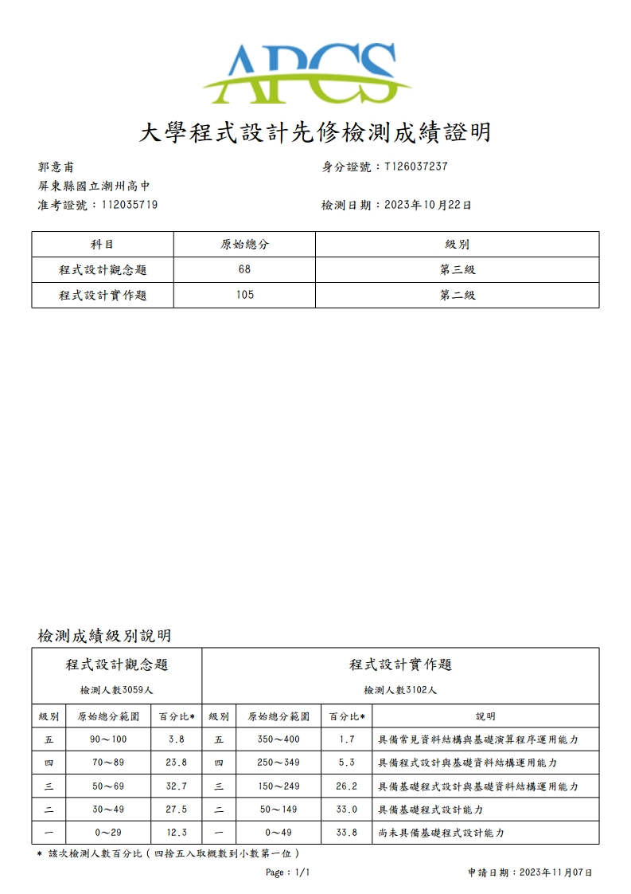

2023/10 APCS檢測心得
考試地點：屏東大學民生校區
觀念題：
感覺比上次簡單一點，不會的題目比較少，但是有些沒看過的題目還是想不太出來，所以有好幾題用猜的。
實作題：
第一題很快就作完了，馬上作了第二題，卻卡在消掉相同數值的方法，我一開始很直觀的把要消掉的數改了值，當成是空格，接著逐一搜索，想說應該沒問題，但跑測資時出了狀況，一直得不到對的結果，導致我在第二題卡了很久，最後硬寫過去，感覺拿不到多少分，挫折感蠻重的。
第三題沒看直接跳第四題，第四題很難單看題目直接寫出解答，所以我寫了一個k =0的寫法，最後也沒有檢查對錯(時間來不及)。
這次考實作前我有把握能得到不錯的成績，但考完後感覺自己搞砸了，心情不免感到失落，我覺得我需要檢視自己平常的練習內容、安排課表，然後改進自己的缺點，這樣才能在實作中穩定表現。
2023/10/22
2023/10/22 筆
檢測結果 : 觀念題3級分/實作題2級分
證明 :
